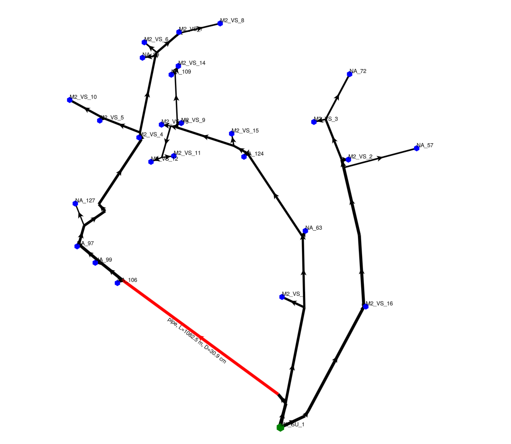

Network
Network is the main model type in DHNetworkSimulator. It represents a district heating network as a directed graph:
- water flows from one producer (the source/root),
- through optional junctions (branching/merging points),
- to multiple loads (consumers, typically leaves).
Unlike a plain graph, a Network stores typed domain data on:
- nodes:
ProducerNode,JunctionNode,LoadNode(plusEmptyNodeas a placeholder during construction), - edges: typically
InsulatedPipe(plusEmptyEdgeas a placeholder during construction). - more on nodes and edges in Network nodes and edges
This design makes it straightforward to build a topology, attach physical parameters, and run the hydraulic + thermal simulation.
See Network in the API reference.
Features
- Typed nodes and edges: domain structs like
ProducerNode,LoadNode, andInsulatedPipeare stored directly on the graph. - Label-based addressing: access nodes/edges by string labels (
nw["A"],nw["A", "B"]). - Graphs.jl compatibility:
NetworksubtypesAbstractGraph, so you can use functions likenv,ne,vertices, andedges. - Validated structural assumptions:
run_simulationcallsDHNetworkSimulator.check_network!to validate the topology (one producer, acyclic, connected, loads are leaves). - Fast neighbor access: cached neighbor lists via
NeighborDictswith label-based helpersoutneighbors/inneighbors. - Built-in visualization: interactive plotting via
visualize_graph!with edge labels fromedge_info/edge_info_hover.
Implementation details
MetaGraph
For the internal graph structure we use MetaGraph MetaGraphNext.jl, because it is type stable (not like MetaGraphs.jl). We prefer it over Graphs.jl for 2 main reasons:
- graph from
Graphs.jlhas not stable indexing: when a node is removed, all the nodes are reindexed so that there are no gaps in indexing. For example we have graph with three vertices {V[1], V[2], V[3]}. If we remove the middle vertex V[2], the vertex V[3]'s indexing is changed to be V[2]. On the other hand, if we remove vertex V[B] from metagraph {V[A], V[B], V[C]}, the indexing (or rather labeling) stays the same and we get {V[A], V[C]} - MetaGraph lets us store node/edge data on the vertices/edges.
Indexing by Labels
Nodes and edges are addressed by string labels:
nw["A"]returns the node data for label"A".nw["A", "B"]returns the edge data from"A"to"B".
Because Network subtypes AbstractGraph, you can also use Graphs.jl-style APIs such as nv, ne, vertices, and edges.
Functions like vertices, edges, src(e), dst(e) from Graphs.jl give you vertex indices from the underlying graph. To convert an index back to a label, use label_for(nw, idx).
Structural Assumptions (Validated at Simulation Start)
The simulator assumes the network is static during a run (topology does not change while stepping). Before simulation starts, DHNetworkSimulator validates that:
- there is exactly one producer node (
producer_labelmust be set), - the directed graph is acyclic,
- the graph is connected (all nodes are reachable from the producer),
- load nodes are leaves (outdegree 0).
run_simulation calls check_network! internally before the first step, which does all of that, no need to do it yourself.
Neighbor Caching (NeighborDicts)
Thermal and hydraulic stepping frequently calls outneighbors(nw, label) and inneighbors(nw, label). To reduce allocations and repeated work, Network maintains cached neighbor lists in NeighborDicts:
See NeighborDicts in the API reference.
When you modify the network structure (add/remove/rename nodes or edges), the cache is marked dirty. It is rebuilt automatically when needed (for example in run_simulation via check_network!). Also simple call outneighbors(network,label) makes the cache update if marked dirty.
Typical Workflows
1) Create a Network From a Graph Topology
Use this when the topology already exists (e.g., imported from data or generated programmatically) and you want to attach node/edge data afterward.
using DHNetworkSimulator
using Graphs
# 1 -> 2 -> 3, and 2 -> 4
g = DiGraph(4)
add_edge!(g, 1, 2)
add_edge!(g, 2, 3)
add_edge!(g, 2, 4)
nw = Network(g)
name_nodes!(nw, ["P", "J", "L1", "L2"]) # rename 1..n to meaningful labels
identify_producer_and_loads!(nw) # assign Producer/Junction/Load node types
# attach pipe parameters (edge data)
nw["P", "J"] = InsulatedPipe("P→J"; length=300.0, inner_diameter=0.10)
nw["J", "L1"] = InsulatedPipe("J→L1"; length=150.0, inner_diameter=0.08)
nw["J", "L2"] = InsulatedPipe("J→L2"; length=180.0, inner_diameter=0.08)
ne(nw), nv(nw)(3, 4)We can also display all sorts of info about the network:
julia> nw
DH Network:
Number of nodes: 4
Number of edges: 3
Producer node: P
Load nodes (2): {L1, L2}
Neighbor dicts need rebuild: true
---
Nodes in the network:
[1] L1 : Load Node, Info: L1, Load (at 0°C): 540.0 kW
[2] P : Producer Node, Info: P
[3] J : Junction Node, Info: J
[4] L2 : Load Node, Info: L2, Load (at 0°C): 540.0 kW
---
Edges in the network:
[2] P --> [3] J : Pipe Edge, L=300.0, D_in=0.1, R_f=3.0, R_b=4.0
[3] J --> [1] L1 : Pipe Edge, L=150.0, D_in=0.08, R_f=3.0, R_b=4.0
[3] J --> [4] L2 : Pipe Edge, L=180.0, D_in=0.08, R_f=3.0, R_b=4.02) Build a Small Network Manually
For quick experiments you can start from Network() and assign nodes/edges directly by label.
using DHNetworkSimulator
nw = Network()
nw["P"] = ProducerNode("Plant", (0.0, 0.0))
nw["L1"] = LoadNode("House 1", (1.0, 0.0))
nw["P", "L1"] = InsulatedPipe("P→L1"; length=200.0, inner_diameter=0.10)julia> nw
DH Network:
Number of nodes: 2
Number of edges: 1
Producer node: P
Load nodes (1): {L1}
Neighbor dicts need rebuild: true
---
Nodes in the network:
[1] P : Producer Node, Info: Plant
[2] L1 : Load Node, Info: House 1, Load (at 0°C): 540.0 kW
---
Edges in the network:
[1] P --> [2] L1 : Pipe Edge, L=200.0, D_in=0.1, R_f=3.0, R_b=4.0Network visualization
Visualization (plotting) of network is another feature that will come in handy. We can pan, zoom and if we hover over an edge, it turns red and additional info is shown.
By calling visualize_graph!(network) we get Makies display of our network.
Blue nodes are loads, green is producer, black lines are pipes. The thicker the line, the bigger the pipe.
f, ax, p = visualize_graph!(network)
display(f) Vizualization of example network
If there is computed steady state flow first, the visualization shows the flow in the edges as well. The darker the more flow there is, which makes easy to analyze turbulance. Also, additional info is written in labels next to the edges and the exact flow velocity in [m/s] is shown upon hover.
steady_state_hydronynamics!(network, 100.0)
f, ax, p = visualize_graph!(network)
display(f) Zoomed in part of a network after computing steady state of hydrodynamics
Zoomed in part of a network after computing steady state of hydrodynamics
When to Use Network
Network is intended for modeling and simulation tasks such as:
- Control and policy studies: define a
policy(t, Tₐ, T_back)callback and see how actions affect supply/return temperatures. - Design what-ifs: change pipe parameters and compare temperature drops, delays, and load satisfaction.
- Topology experiments: evaluate different branching structures and relative flow splits.
- Visualization & debugging: inspect the graph, pipe information, and computed flows.